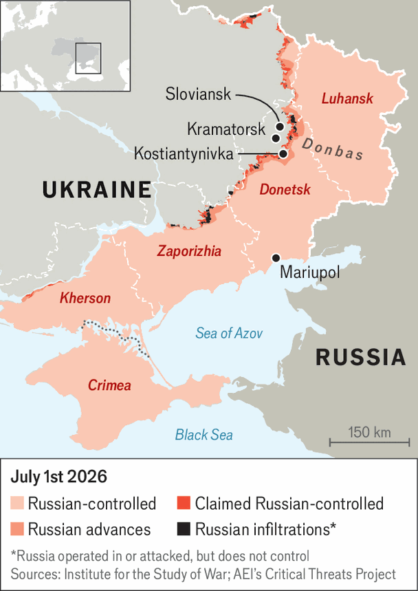

Volodymyr Zelensky’s surge is a bid to force peace talks
Ukrainian claims to be winning the drone war are partly propaganda and partly real
July 2nd 2026

TO A SLAVIC ear, 40 days is no accidental deadline. In Russia as in Ukraine, the 40th day after death is when the soul departs. So when Volodymyr Zelensky took to social media on June 25th to announce a new drone surge to “compel” Russia to negotiate for peace, he seemed to be telling Vladimir Putin he was already finished. With blunt messages like these, the Ukrainian president has lately been beating Mr Putin in the war of words.
The military balance is less clear-cut than the rhetoric. But Mr Zelensky’s threats are not idle. Ukraine is bombing refineries in Russia, forcing petrol rationing in over a dozen regions. Strikes on roads, bridges, railways and ferries into Crimea are starving the Russian-annexed peninsula, home to a massive military grouping, of the means to function. Ukraine’s mid-range drone operation has become the war’s defining trend this summer.
Plans for a campaign attacking Russian logistics between 20km and 200km behind the front line have been in development since early 2025. But it came into being only in the second half of May, once Ukraine developed the units, doctrine, and types and numbers of drones required. Elon Musk’s agreement to end Russian forces’ Starlink satellite access opened new opportunities. “The moment we realised we had a chance was when we saw just how many air-defence systems we were destroying,” says Major Yevhen Karas, commander of the 413rd unmanned systems regiment. Major Karas, who played a key role in planning the operation, describes a recent mission above Crimea when his drones flew for over two hours without being intercepted.

In the past three months Ukraine’s forces have destroyed over 70 air-defence systems—more than many countries possess in total—and inflicted losses that will take Russia years to replace. Ukraine is increasingly squeezing the supply routes into Crimea. A new generation of drones, some semi-automated, stalk petrol tankers and military vehicles on highways such as the R-280 from Mariupol to Crimea. According to Ukraine, freight traffic on that road has fallen by 71% this year.
But Crimea is not yet isolated. Those involved say that is months away, if at all possible. “Think of it as a plan for defence, rather than victory,” says Dmytro Pletenchuk, a Ukrainian navy spokesman. The main aim, he says, is to make it hard for Russia’s huge Crimean military grouping to operate. A Ukrainian intelligence source says the Russians have weeks of fuel reserves. “They have problems,” the source says, “but it isn’t yet decisive.”
In Donbas, meanwhile, things are no walk in the park. Its hilly terrain limits drone operations. A dense web of roads links Russian troops to supply hubs in Russia. The rate of the Russian advance may have slowed, but infiltration by small groups continues.
Pressure is building on Ukraine’s fortress belt in Donbas. There is fierce fighting in Kostyantynivka and near Kramatorsk and Sloviansk. A commander of an elite special-forces unit says Russia retains a marked advantage in men and munitions. “I see no sign of the enemy collapsing,” he says. Ukraine’s general staff puts Russia’s Ukraine grouping at 721,300, a drop of only 3,000 since the start of the year. Russia is outshelling Ukraine two to one, and sends up to 90 missiles and 300 guided bombs a day, weapons Ukraine mostly lacks.
Mr Zelensky’s 40-day deadline is best understood as political theatre. Officials close to the presidential office suggest it is designed to dovetail with the next possible moment for negotiation. Talks are expected to move from back channels in August, when Russia’s high command (ie, Mr Putin) decides whether to commit to an autumn-winter campaign.
Ukraine hopes that pressure on Crimea could push Mr Putin into serious negotiations. Failure to force a reckoning in August will let the war slide into the winter, with a renewed Russian campaign to destroy Ukraine’s energy grid. Then the pendulum may again swing away from Ukraine. The 40-day deadline, says a source involved in the Crimean drone operation, changes little on the ground. “But it is a crucial instrument in the cognitive war.”
Ukraine’s fake-it-till-you-make-it approach is well designed to buck up Ukrainians and to persuade an American president looking for “winners”. But it is more than propaganda. The shift in military standing is real, if oversold. And winning the information war has consequences. On June 26th the Russian-appointed head of Crimea declared a state of emergency. Russian nationalists are demanding Mr Putin respond. “I thought they would be screaming around July,” says Major Karas. “They started screaming at the end of May. Let’s see where they are in August.” ■
To stay on top of the biggest European stories, sign up to Café Europa, our weekly subscriber-only newsletter.